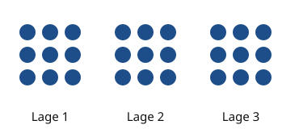
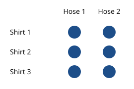
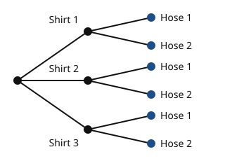

Medienübersicht
Alle Bilder, Audios und Videos dieser App mit ihrer Quelle und ihrer Lizenz.
Bilder

images/folge-wand.svg© CC-BY-4.0Verwendet auf: Muster fortsetzen, Die Regel finden
images/quadrat-vier.svg© CC-BY-4.0Verwendet auf: Quadrat- und Kubikzahlen

images/wuerfel-drei-lagen.svg© CC-BY-4.0Verwendet auf: Quadrat- und Kubikzahlen

images/buendeln.svg© CC-BY-4.0Verwendet auf: Zehnerpotenzen

images/plaettchenfeld-outfits.svg© CC-BY-4.0Verwendet auf: Zählen mit der Tabelle

images/baum-outfits.svg© CC-BY-4.0Verwendet auf: Zählen mit dem Baum